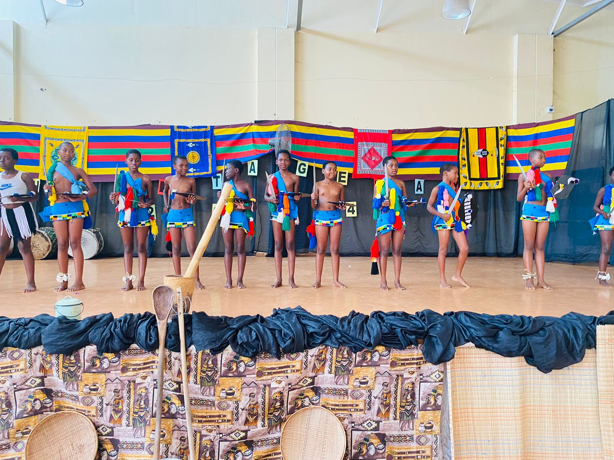
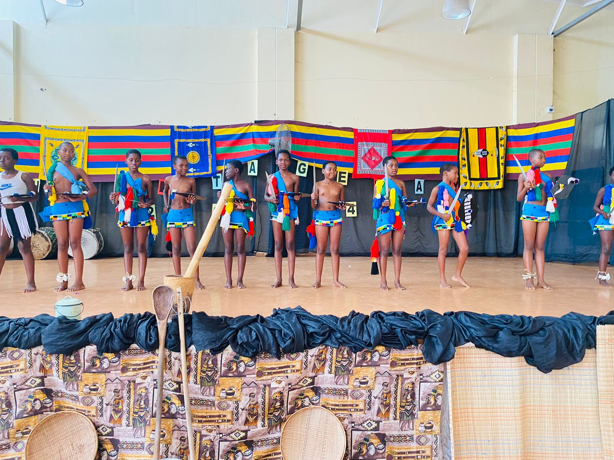

Cultural Activities
Cultural activities stimulate the growing brain. These extra-curricular activities allow children the opportunity to not only satisfy their natural desire to be creative and imaginative, but to:
- Develop co-ordination and fine-motor skills
- Improve critical-thinking and problem-solving skills
- Gain confidence and strengthen self-esteem
- Experience freedom of expression
KaMhlushwa Primary School is fortunate to have a skilful and dedicated staff to provide a wide variety of cultural activities in which to participate.
Traditional Dances
 
